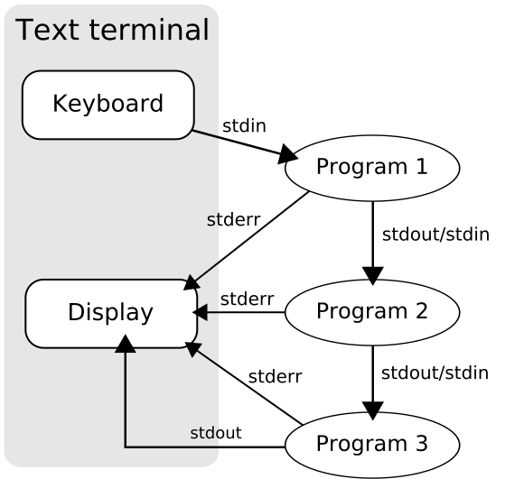

Módulo 1 del Taller de Herramientas Computacionales
Created: 2026-02-24 Tue 00:19
Un shell es un programa que proporciona una interfaz entre el usuario y el kernel (núcleo) del sistema operativo. El shell es la capa de comandos que permite a los usuarios comunicarse con el sistema operativo mediante instrucciones escritas.
bash es uno de los shells más populares y ampliamente utilizados en sistemas Linux y BSD (MacOs). El shell por defecto en muchas distribuciones Linux.
🔗 [Documentación oficial de Bash](https://www.gnu.org/software/bash/manual/)
zsh es otro shell moderno que ofrece características avanzadas en comparación con bash.
bash.🔗 [Sitio web oficial de Zsh](https://zsh.sourceforge.io/)
ls permite ver el contenido de un directorio.
ls
ls| Opción | Descripción |
|---|---|
ls -l |
Muestra detalles (permisos, propietario, tamaño, fecha de modificación) |
ls -a |
Muestra archivos ocultos (aquellos que empiezan con .) |
ls -la |
Combina -l y -a: muestra todos los archivos con detalles |
ls -h |
Usa unidades legibles (KB, MB, GB) cuando se combina con -l |
ls /ruta/ |
Lista los archivos de un directorio específico |
En sistemas Unix y Linux, cada archivo y directorio tiene permisos que definen quién puede leer, escribir o ejecutar ese archivo. Estos permisos están divididos en tres categorías:
Y cada categoría puede tener estos permisos:
r → lectura (read)w → escritura (write)x → ejecución (execute)chmod
Puedes modificar permisos con el comando chmod. Hay dos formas: simbólica y octal.
Cada permiso tiene un valor numérico:
r = 4w = 2x = 1Se suman por categoría. Por ejemplo:
chmod 755 script.sh
Significa:
rwxr-xr-x
Entonces: rwxr-xr-x
chown chgrp
chown nuevo_usuario archivo.txt
chgrp nuevo_grupo archivo.txt
> Nota: chown puede cambiar ambos: chown usuario:grupo archivo.
mv archivo_viejo archivo_nuevo
touch archivo_nuevo.txt
Las tuberías (pipes) (|) y el redireccionamiento (< >).
Permiten manipular la entrada y salida de datos entre comandos.
 (Tomado de Wikipedia)
Cuando ejecutamos un comando en la terminal, se tienen las siguientes entradas y salidas.
Por default:
Esto permite manipular flujos de datos fácilmente usando redirecciones como:
comando < archivo_entrada.txt > salida.txt 2> errores.txt
< redirige entrada> redirige salida estándar2> redirige errores# Formato con redireccionamiento
# Comando recibe archivo_entrada, escribe: archivo_salida
comando < archivo_entrada > archivo_salida
# Usando tuberías
comando1 | comando2 | comando3
# Redireccionando Errores
comando 2> errores.log # Solo errores
comando > salida.log 2>&1 # Todo en un archivo
| Símbolo | Acción |
|---|---|
| | | Conecta salida de un comando con entrada de otro |
> |
Redirige salida a un archivo (sobreescribe) |
>> |
Agrega salida al final de un archivo |
| ~< | Usa archivo como entrada |
2> |
Redirige errores a un archivo |
&> |
Redirige tanto salida normal como errores |
# Guardar lista de archivos en un archivo
ls -l > archivos.txt
# Contar cuántos archivos hay
ls | wc -l
echo "Hola mundo" > saludo.txt # Escribir en archivo
echo "Juan" >> nombres.txt # Escribir en archivo
echo "Antonio" >> nombres.txt # Escribir en archivo
echo "Jessica" >> nombres.txt # Escribir en archivo
sort < nombres.txt > ordenados.txt # Leer de un archivo y guardar en otro
Encontrar archivos modificados hoy y contarlos
ls -la | grep "$(date +%b\ %d)" | wc -l
# Buscar archivos y procesarlos: cambiar permisos solo a scripts Python
find . -name "*.py" -type f | xargs chmod +x
# Monitoreo simple: revisar uso de CPU cada 5 segundos
while true; do uptime >> cpu_log.txt; sleep 5; done
# Seleccionar solo algunas columnas
cat cpu.log.txt | awk '{print $1, $6, $10}' | sort -k 2
CTRL + r <PALABRA> se puede buscar la última ocurrencia del comando con <PALABRA>! seguido del número del historial.bashrc
El archivo ~/.bashrc es un script de bash que se ejecuta cada vez que iniciamos una sesión en la terminal en sistemas Unix. Este archivo permite personalizar el ambiente de trabajo, estableciendo variables, alias, funciones y otros ajustes que facilitan el trabajo.
Entre las funciones principales esta:
Ejemplo básico de configuración en /.bashrc:
# Establecer un alias para ls
alias ls='ls --color=auto'
# Establecer una variable de entorno
export PATH="$HOME/bin:$PATH"
# Mostrar un mensaje al iniciar sesión
echo " Bienvenido al sistema, $(whoami)!"
Para aplicar los cambios hechos en ~/.bashrc, puedes ejecutar:
source ~/.bashrc
o reiniciar la terminal.
En sistemas como Ubuntu o Debian, también existe el archivo /etc/bash.bashrc, que define configuraciones globales para todas las cuentas del sistema. Sin embargo, es recomendable modificar solo ~/.bashrc para evitar interferencias.
~/.bashrc para un entorno científico:# Alias útiles para el desarrollo
alias ll='ls -alF'
alias gs='git status'
alias ga='git add'
alias gc='git commit'
alias gp='git push'
# Variables de entorno para Python y R
export PYTHONPATH="${HOME}/proyectos:$PYTHONPATH"
export R_LIBS_USER="${HOME}/R/library"
wget https://www.gutenberg.org/cache/epub/1727/pg1727.txt
mv pg1727.txt la_odisea.txt
# Buscar palabras en un texto grande cat la_odisea.txt | grep "Ulysses"
Ulysses en el texto# Buscar palabras en un texto grande cat la_odisea.txt | grep "Ulysses" | wc
El archivo nombres_odisea.txt contiene una lista sencilla de todos los personajes que aparecen en la mítica historia de de Ulises en su regreso a Ítaca.
#Podemos utilizar un mini-bash for i in $(cat ./ejem_odisea/nombres_odisea.txt); do echo $i; done
for NOMBRE in $(cat ./ejem_odisea/nombres_odisea.txt);
do
CONTEO=$(cat la_odisea.txt | grep ${NOMBRE} | wc -l)
echo ${NOMBRE} ${CONTEO} >> conteo_nombres.txt
done
cat conteo_nombres.txt | sort -nk 2 -r
Los condicionales en Bash permiten tomar decisiones durante la ejecución de un script. La estructura principal es if-elif-else-fi.
*/ if :: Ejecutar si una condición es verdadera
La sintaxis más básica:
if [ condicion ]; then
# Comandos si es verdadera
fi
if [ -f "mi_archivo.txt" ]; then
echo "El archivo existe"
fi
if [ ! -f "mi_archivo.txt" ]; then
echo "El archivo NO existe"
else
echo "El archivo sí existe"
fi
if [ -f "datos.csv" ]; then
echo "Es un CSV"
elif [ -f "datos.json" ]; then
echo "Es un JSON"
else
echo "Formato desconocido"
fi
Para archivos:
| Operador | Significado |
|---|---|
-f |
Existe y es un archivo regular |
-d |
Existe y es un directorio |
-r |
Es legible por el usuario |
-w |
Es escribible |
-x |
Es ejecutable |
-s |
No está vacío |
Para números y strings:
| Operador | Significado |
|---|---|
== |
Igual que |
| =~ =~ | Coincidencia con patrón (regex) |
!= |
Diferente de |
| =~ =~ | Coincidencia con patrón (regex) |
-lt |
Menor que |
-gt |
Mayor que |
-le |
Menor o igual |
-ge |
Mayor o igual |
| Operador | Significado (strings) |
|---|---|
= |
Contiene (substring) |
| =~ =~ | Coincidencia con patrón (regex) |
| =~ =~ | Longitud nula (vacío) |